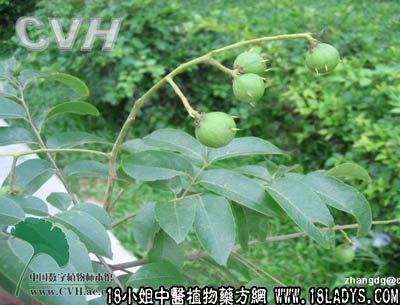

仁面树叶(中药材植物名:人面子)(植物科目:漆树科)

别名：艮捻叶。
植物名：人面子。
生长环境：本品为常绿大乔木。栽培于村庄旁作为果树。
分布：我国南部地区，广东中部较多栽培，此外越南亦有。
入药部分：叶。
采集期：全年。
自采地点：家种。
性味：性平、味酸。
功能：生津止渴、健胃消滞。
主治、用量和用法：1、产后口渴：干用1～2两，微炒，清水适量，煎一小时，作茶，分次服；2、食滞：干用1～2两，清水煎服。
（方歌）产后口渴与食滞，仁面树叶能健胃，微炒煎汤渴作茶，止渴生津兼消滞。
本文解释权归中药大全，本文地址：https://www.daquan.com/post/1493.html